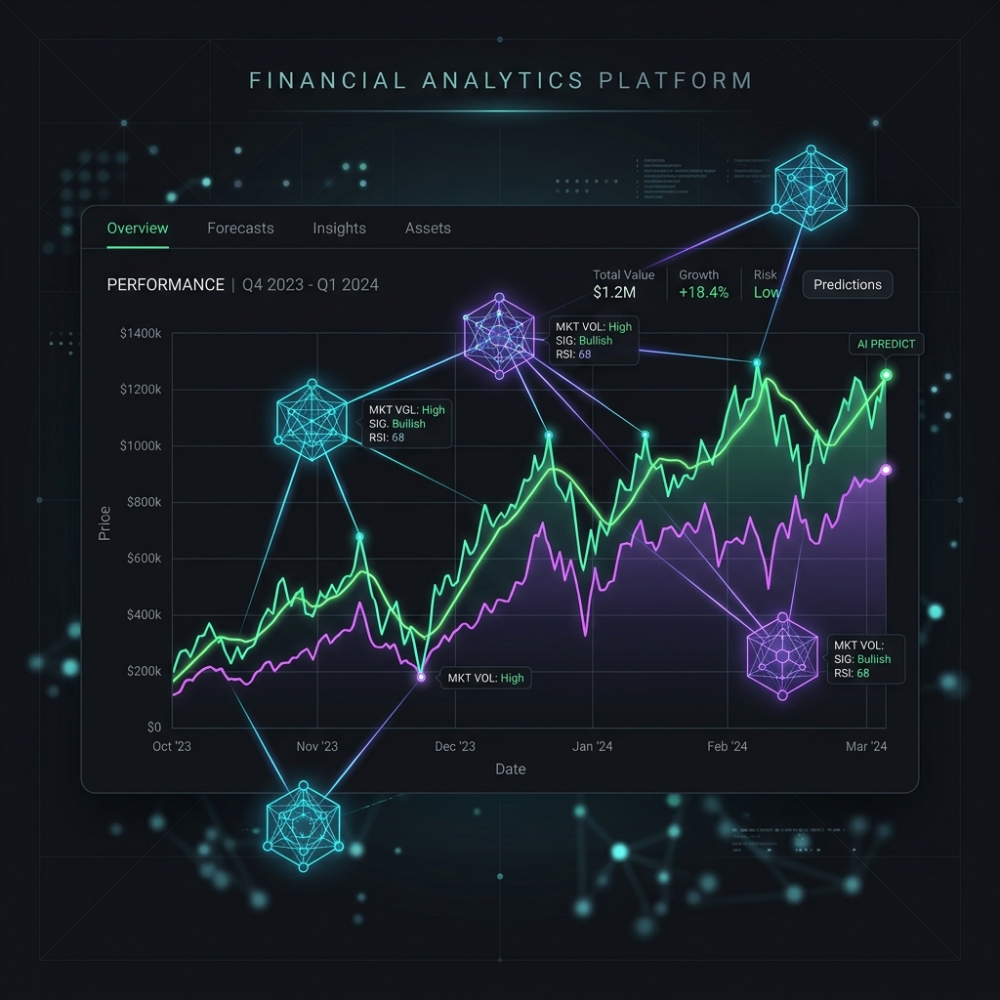
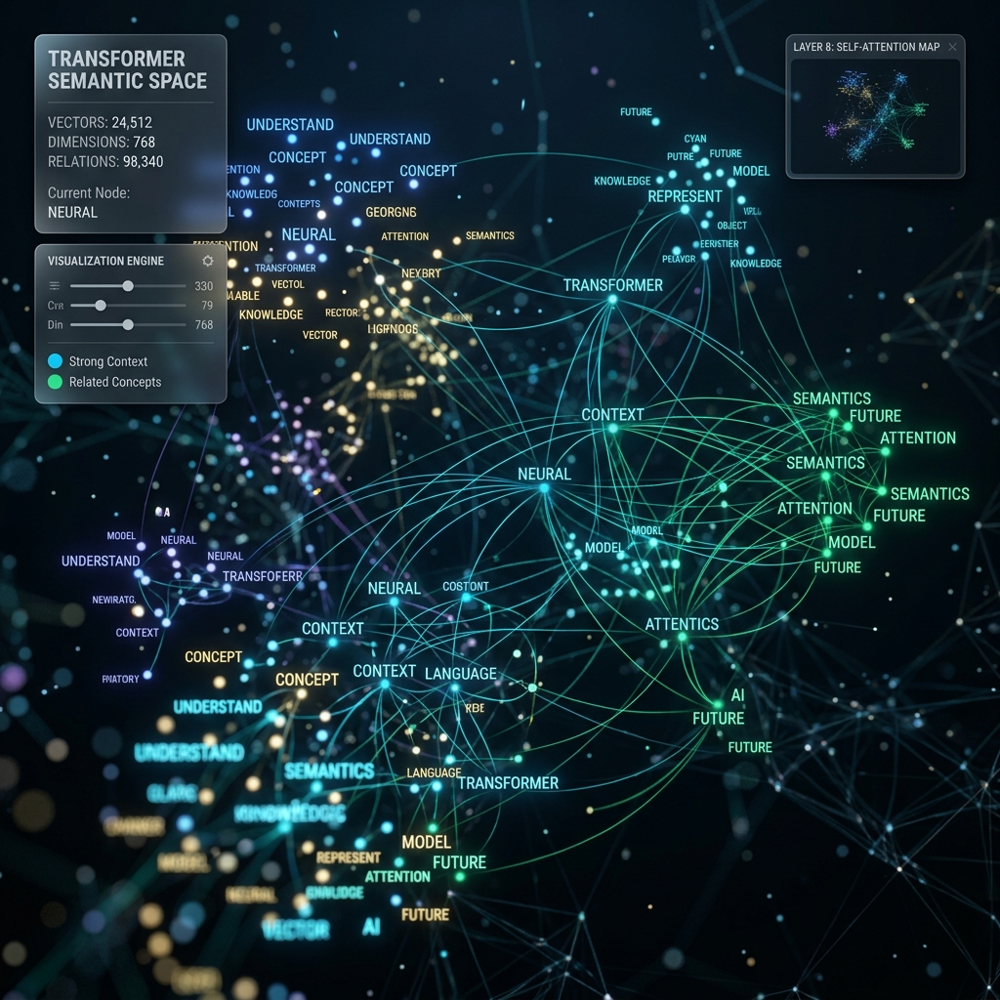

NeuroSketch: Generative Art
A generative adversarial network trained on abstract expressionist datasets to generate original high-resolution neural digital paintings. Features custom loss functions.
Welcome to my AI Hub. Here, I document my experiments, share structured notes, and showcase hands-on machine learning projects as I transition from foundational mathematics to state-of-the-art architectures.
import torch
import torch.nn as nn
# Define a simple policy network
class PolicyNetwork(nn.Module):
def __init__(self, state_dim, action_dim):
super().__init__()
self.network = nn.Sequential(
nn.Linear(state_dim, 128),
nn.ReLU(),
nn.Linear(128, action_dim),
nn.Softmax(dim=-1)
)
def forward(self, state):
return self.network(state)
print("Agent compiled successfully!")A collection of neural models, algorithm implementations, and datasets I have built.
A generative adversarial network trained on abstract expressionist datasets to generate original high-resolution neural digital paintings. Features custom loss functions.

A deep reinforcement learning agent designed to optimize stock portfolio weight allocations under market volatility, utilizing custom Proximal Policy Optimization (PPO).

A custom-trained transformer model fine-tuned on customer support text streams. Achieves 94.2% accuracy in multi-class emotional sentiment classifications.
Documenting concepts, breakthroughs, and my daily progress in mastering AI.
Understanding how transformers map tokens dynamically through Queries, Keys, and Values. Self-attention is the secret sauce that allows modern LLMs to capture long-range dependencies in text. Let's break down the dot-product attention formula step-by-step and code a mini attention head from scratch.
Deep dive into Markov Decision Processes (MDPs) and the exploration vs. exploitation trade-off. I implemented a classic Q-learning agent to navigate frozen lake grids and taxicab paths. Here is what I learned about tuning reward structures and epsilon-decay rates.
How parameter-efficient fine-tuning (PEFT) and LoRA allow developers to customize large models on consumer-grade hardware. I outline my training configurations, loss curves, and the evaluation benchmarks I used to ensure code syntax correctness.